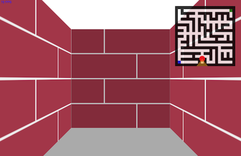
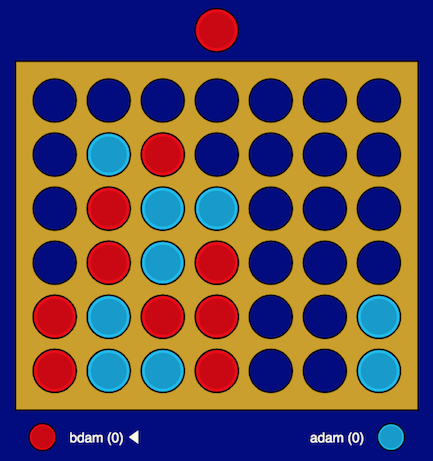
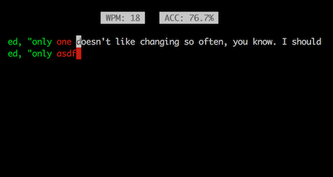

Adam Richardson
I'm a Canadian software developer studying computer science at the University of Waterloo (graduating in late 2020). I'm seeking an internship for the summer of 2020, and full-time opportunities for 2021 and beyond. I can be reached via LinkedIn, or at the email address listed on my resume.
(Jump to: work experience, personal projects)
Work Experience
Stripe
Senior Software Engineer; tech lead for Data Movement (2020 - present)
- As tech lead for Data Movement, set the technical direction, drove planning and prioritization, and scoped projects for a team of 7 engineers
- Designed and implemented Stripe’s next-generation streaming ingestion platform based on Apache Flink and Kubernetes, reducing end-to-end data ingestion latency from 2+ hours to less than 1 minute
- Drove fundamental efficiency improvements for Stripe’s Spark- and Airflow-based data ingestion platform, totaling $3.5m/year of AWS savings
- Implemented a custom S3 retry policy for Stripe’s Spark data pipelines, reducing the number of pipeline failures due to rate limiting by a factor of 10
- Led a cross-functional project across feature 8 engineers across 3 teams enabling support for Stripe’s next-generation API data models in across all offline workflows the data warehouse
Coinbase
Software Engineer (Coinbase Commerce, Application Security, 2017 - 2019)
- Built a SaaS cryptocurrency ecommerce platform from the ground up that went on to process more than $10M USD in transaction volume
- Implemented fundamental improvements in Coinbase’s open-source vulnerability scanner, Salus
- Shipped open-source patches fixing critical bugs in the Yarn and Rails
Stripe
Engineering Intern, Storage (January - April 2017)
- Lead a mission-critical shard rebalancing for Stripe's sharded MongoDB installation, deploying hundreds of new servers and migrating terabytes of live production data with zero downtime
Shopify
Software Developer, Production Engineering (January 2016 - August 2016)
- Built and deployed a custom caching layer for NGINX load balancers, increasing global cache hit rate by 4%
Personal Projects
libcrex
Feature-complete, performant regular expression library, written in C; featuring a cross-platform interpreted VM, as well as a compiler targeting x86_64 on Linux and Darwin.
queensway
Toy DNS proxy server implemented in Rust.
calico
Ray tracer writen in Rust.
petrel
Toy implementation of SHA-1 and SHA-2 family of hash functions written in Rust.
raycast
Raycasting 3D renderer, written in pure Javascript. Generates a maze-like world using a randomized variant of Prim's algorithm and navigates through the grid to an exit. Reminiscent of a classic Windows 95 screensaver.
es6-connect4
Browser-based multiplayer Connect 4 game, written in ES6 with Flow. Supports mouse, touch, and keyboard controls.
termracer
Tiny console typing game loosely inspired by typeracer, written in C with ncurses. Featuring a corpus of texts from Alice in Wonderland.
kudos
Browser-based sudoku app, written in pure Javascript. Comes preloaded with a large variety of puzzles and features automatic solving, hints, error checking, and a builder mode.